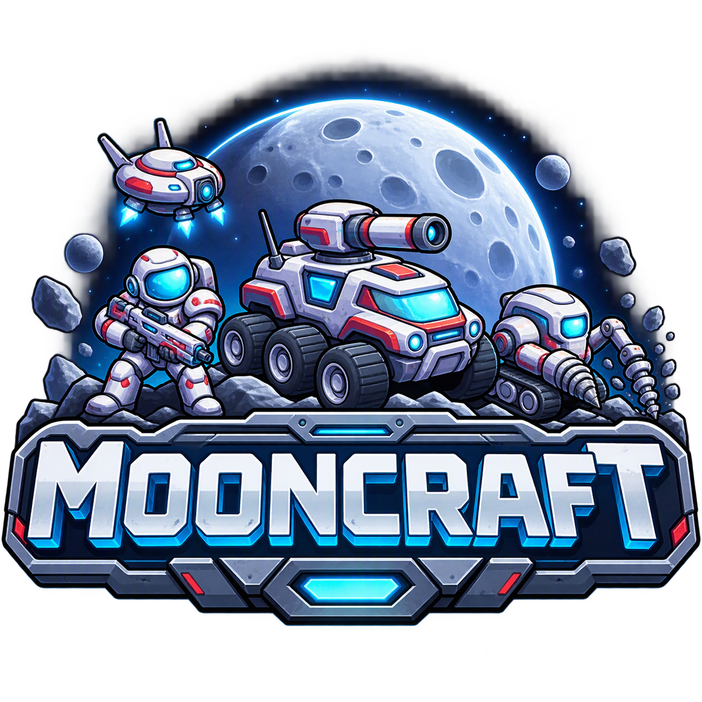

Economy Sandbox
Select your Constructor, build Power Relays and gather regolith. Connect the network and process 30 new Material, then keep playing.
Rust + Bevy / In development
A small lunar RTS with a bigger engineering mission: build dependable agent-development tooling, and prove it against a real game.
Native desktop prototype. Not a browser game or finished release.

The game
Connect Solar to a Processor, move regolith through the Material chain, and recover when the power goes down. These are implemented scenarios, not a promise of a finished combat RTS.
Select your Constructor, build Power Relays and gather regolith. Connect the network and process 30 new Material, then keep playing.
A guided economy lesson that reads the real simulation. Learn construction, gathering and Power without hidden resource grants or scripted shortcuts.
A cable fails. The battery will not last forever. Build a bypass, restore production and reach 60 new Material.
Still ahead: combat, enemy AI, general base building and a full campaign. The artwork depicts the wider vision, not additional playable units.
The engineering mission
The primary engineering priority is reusable, dependable agent tooling. Mooncraft provides meaningful implementation work, real failure modes and a codebase worth keeping maintainable.
Determinism is the foundation. The simulation runs at 20 Hz with validated commands, ordered events, replay verification and canonical state checksums. Presentation observes the simulation; it does not own the truth.
moonctl tracks work selection, claims, source identity and decision authority.
An agent gets a bounded task, not permission to change everything.
moond provides opt-in local supervision with finite work limits.
It is not an unattended production service or blanket autonomous-delivery certification.
Get started
The game source is currently private; repository access is required. This public website contains only the project overview and branding.
Install Rust and your platform's linker prerequisites, then use a Bevy-compatible GPU and driver. The game needs Rust 1.95+; these commands select the development toolchain without changing your default.
git clone https://github.com/monk-eee/Mooncraft.git
cd Mooncraft
rustup toolchain install 1.97.0 --profile minimal
cargo +1.97.0 run -p mooncraft-game --lockedWindows is the current graphical development environment. Linux and Apple Silicon macOS are approved targets; native qualification and distributable packages are pending.
Choose New Game / Economy Lesson, select First Outpost: Economy Lesson, review the briefing and choose Start Game.
Game repository and documentation links require repository access. The website source is public.